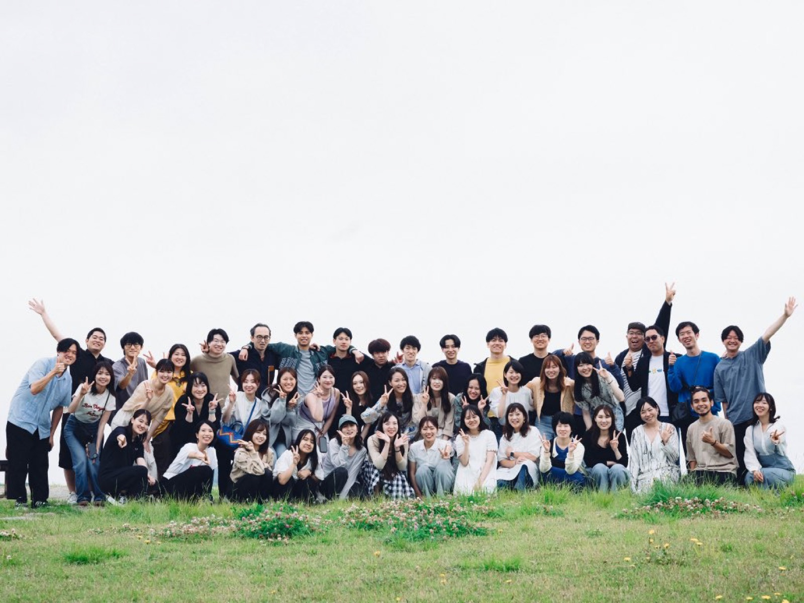
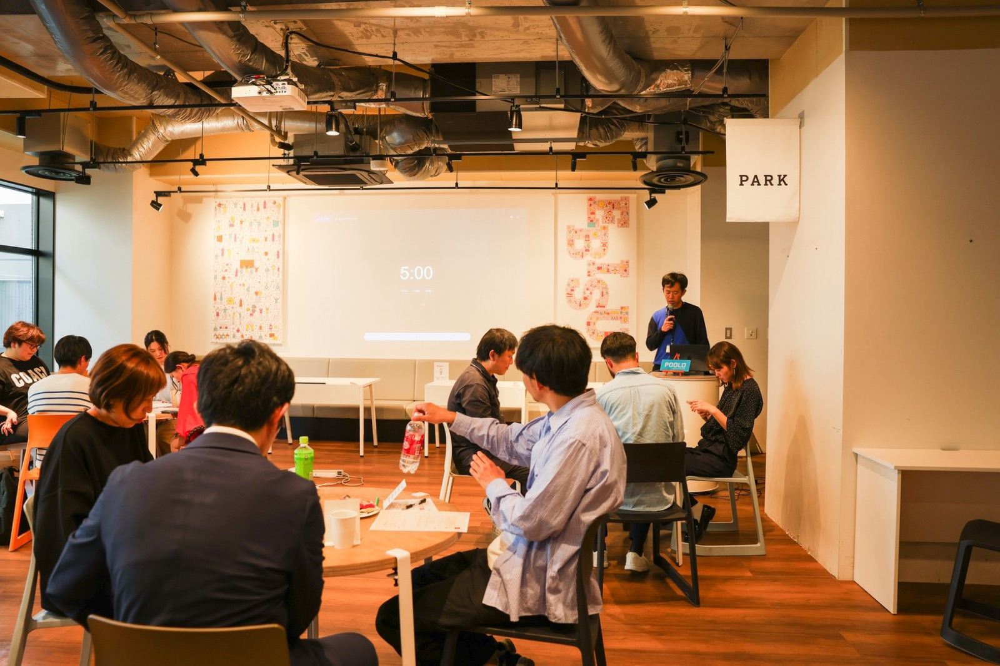

8ヶ月の旅のなかで、参加者それぞれが受け取ったもの。講義や合宿、仲間との対話から生まれた気づきを、これからの誰かのために、そっと置いておきます。

これは、POOLO（あたらしい旅の学校）で生まれた学びを持ち寄るアーカイブです。特定の期のものではなく、旅を入り口にした学びのなかで、多くの人が繰り返し辿り着いた気づきを集めました。
いま参加している人には自分の言葉を見つけるヒントとして。これから参加を考えている人にはここで何が起きるのかの手がかりとして。読みたいところから、どうぞ。
POOLOの学びは、バラバラの知識ではなく、ゆるやかに繋がった4つの系統として立ち現れます。入り口はどこでもいい。最後は「どうありたいか」に還っていきます。
頭で変わろうとするのではなく、知らない場所に身を置いて揺さぶられることから始まる。身体が、心より先に動き出す。
「人は、理屈や努力では変われない。世界に揺さぶられて、身体が先に動き始める」
悩みを「問い」に変え、自分の言葉を取り戻していく。対話と内省と言語化。ここが、いちばん多くの人が変化を感じる領域。
「サボってきた言語化を、やっと始められた」
仲間は鏡。一人では届かない自分に、他者を通して届く。受容が先にあり、そのうえで give が連鎖していく。
「仲間は鏡。一人では届かない自分に、届く」
すべての土台。「何をするか」より「どうありたいか」へ。自己受容と、価値観の再定義。8ヶ月ずっと、静かに全体を支える。
「大事なことは何をするかではなく、どうありたいか」
時系列でみると、学びは 共に旅する → 共に問う → 共に創る の3段階で深まっていきます。ただし土台の「共にある（Being）」だけは、最初から最後まで変わらず全体を支えています。

8ヶ月のカリキュラムは「受け取る → 聴かれる → 仲間に置く → 書き直す → 外へ一歩 → 越境して届ける」と螺旋を描きます。実際の講義・合宿で、何が起きたのか。
問いを真ん中に置いて、対面で揺さぶり合う。満足度が最も高かったキラーワーク。
「ちゃんと、揺さぶられたからこそ、こういう気持ちになってる」
「対話」を段階で学ぶ設計。
「対話には『狙い』はないけど『願い』はある。言葉を紡ぐことは、祈りに似ている」
旅が人にもたらすものを問い直す。
「旅は、人を幸せにする。人を強くさせる。人を利他にさせる」
才能は壮大な何かではなく、自然にやっていることの中にある。
「才能は、自分が自然としていること・考えていること・感じていることの中から見えてくる」
モチベは「上げるもの」ではなく「常に動くもの」。
「モチベーション＝ずっと続けられること。アクセルだと思ってたけど、エンジンだった」
自分の問いを言語化し、発表し、対面で揺さぶり合う。
「7分の発表で、こんなに差が出るのかと感じた」
傷や過去さえ、自分の強みに変えていく整理の場。
「傷こそが私の個性であり、私の味であり、良さである」
POOLOの核心は、スキルよりもここにあります。旅と仲間を通して、思い込みがほどけ、旅や自分の定義が書き換わっていく。参加した人たちの Before → After を並べました。
とにかく何者かになりたくて、必死に生きていた。
新しい自分というより、本来の自分を取り戻した感覚。2期・9期
35歳で、転機は終わってしまう。
思い立ったら、いつでもその時が転機。これって最強。2期
自分は、何をやってもパッとしないダメなやつ。
その自己認識が、たまねぎの皮を剥ぐように溶けていった。2期
ずっと、正解を探していた。
本当は、正解を探すより実験したい人間なのかもしれない。11期
嫌われることが、こわい。
「嫌われる恐怖」が、自分を曝け出すための「安心感」に変わった。
旅とは、非日常へ出かけること。
旅とは、日々の暮らしを豊かにするもの。7期
人生最大の、モヤモヤ期のただ中。
振り返れば、入る前より確実に今の方が良い人生。9期

概念だけでなく、明日から使える構えとコツ。講義や対話のなかで、参加者自身の言葉になったものを集めました。
悩みは個人のなかに閉じてしまう。でも問いにすれば、誰かと一緒に考えられる。抱え込む前に、問いのかたちにしてみる。
お金・時間・価値観・傾聴・街の宣伝。旅先で自分に何が差し出せるかを考えると、関わり方の幅が一気に広がる。
対話や企画に成果を求めすぎない。狙いはなくても、願いはある。結論を急がず、問いと一緒にいる構え。
自分の才能は、当たり前すぎて自分では気づけない。開示するほど、周りが「それ才能だよ」と教えてくれる。
まず自分の中で言語化を楽しむ。発信はそのあと、少しずつで大丈夫。分けて考えると、書くことが軽くなる。
「沈黙って怖くないんだよ」。話がずれても肯定される場では、うまく話そうとしなくていい。まずは聞くところから。
POOLOのいちばんの資産は、人。年齢も住む場所も価値観も違う仲間、そしてゲストの言葉から、一人では届かなかった学びが返ってきます。
「人と対話して揺さぶられる時間。それを通して、自分も知らなかった自分を知る時間だった。」
仲間は鏡 ／ 10期
「年齢も住む場所も価値観も違うのに、誰も否定せず、お互いを受け入れて認め合える関係性だった。」
受容が、先にある ／ 9期
「あれだけ色んな業界で活躍してる“雲の上の存在”の言葉が、『今の俺でもできそう』と思えるくらいシンプルだった。」
ゲスト・先輩の言葉が、地に足をつける
「同じ教室にいたら絶対に交わらないタイプの人ばかり。旅を通して、世界を見るレンズが増えていく。」
多様性が、視点のレンズを増やす
「POOLO生は、案外近しい問いを抱えがち。だからこそ、一人で悩まなくていいと思えた。」
一人で悩まなくていい ／ 11期
＊参加者ご本人が書いてくださったことばを、特定されない形で掲載しています。期のみ添えています。
参加する前によく聞かれる不安に、先輩たちの声で答えます。うまくできるかどうかは、入り口の条件ではありません。
Q.気の利いたことが言えない自分でも、大丈夫？
対話には、結果も結論も成果もありません。ゆっくり向き合い、問いと一緒にいるだけ。まとまっていない言葉こそ、歓迎される場です。
Q.モチベーションが高くないと、続かない？
モチベーションは「上げるもの」ではなく「常に動くもの」。高いテンションを保つ必要はありません。エンジンは、ゆっくりでも回り続けます。
Q.海外や、新しい一歩が正直こわい。
不安があるから進めないのではなく、不安があっても進みたい自分がいる。その気持ちだけで十分です。仲間がいるから、一歩が軽くなります。
Q.やりたいことが、見つからない。
社会人になっても、「やりたかったこと」「学びたいこと」に素直に向き合っていい。POOLOは、その素直さを取り戻す時間でもあります。
Q.内向的で、集団が苦手でも居られる？
「内に篭もりがちな自分から、1歩踏み出すヒントをくれた場所」という声があります。向き合うのは怖いけれど、仲間がいたからできた、と。
もし言語化できないモヤモヤを抱えている人がいるなら、ぜひPOOLOの扉を叩いてみてほしい。そこにはきっと、あなたの全てを受け止めてくれる仲間たちが待っています。
ここは、楽しむだけの場所じゃない。泣いて、笑って、もがいて、変化するための場所だから。
11期
一年前とは、たった 1° ずれた世界。その 1° が、私を変えてくれると信じられる。
9期
新たな旅と仲間に出会って、私の人生が動き出した。
11期
あたらしい旅の学校 POOLO は、旅を入り口に自分の生き方・働き方を問い直す大人の学び場として、7年以上続いてきました。ここに集めた学びは、そのなかで多くの人が辿り着いた気づきの記録です。
運営は株式会社TABIPPO と株式会社CODOLI。

＊気になった方は、ゆっくりどうぞ。